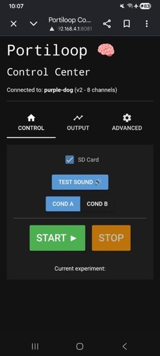
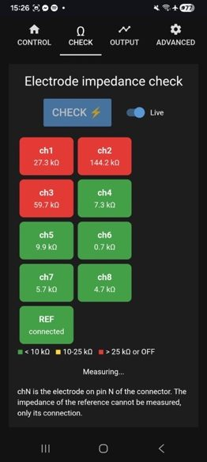
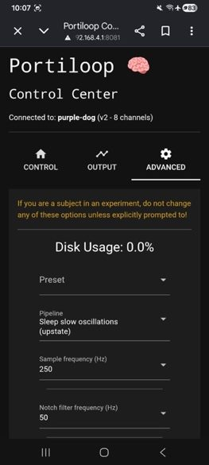
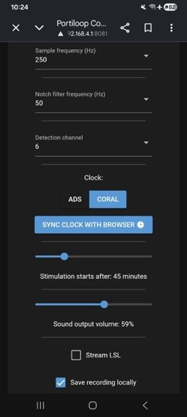
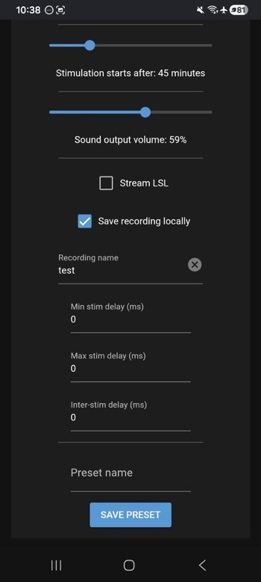

The Control Center
The Portiloop has no screen: you control it from a phone, through a web page that the device serves on its own Wi-Fi network. This tutorial turns the device on, opens that page, and goes through every tab and every setting that the CLAS protocol asks you to check, with what the software really does with each of them.
In this tutorial you will
- Turn the Portiloop on, read its light, and connect a phone to its Wi-Fi and to
http://192.168.4.1:8081/ - Find your way through the four tabs: Control, Check, Output and Advanced
- Run the impedance check, read its colours, and know what an "OFF" electrode does to the next recording
- Set every Advanced setting of the protocol, knowing its default and what it changes in the device
- Avoid the traps of settings that the device remembers from one night to the next (the condition and the recording name among them)
- Know where the protocol and the software disagree
main branch of portiloop-software, the software of the Portiloop v2.3 shown in the protocol, as of commit 917f1f3, the version that recorded the tutorial night (the code links point to that commit, so that the quoted lines stay valid); mainly the Control Center itself, simple_gui.py [2]. The screenshots are from the protocol; some were taken with an older version of the software, and we point out the differences.Turning the Portiloop on
Before you power the device, the earphones and the SD card go in. The protocol's order is:
- Earphones. "Plug the earphones into the Portiloop's earphones jack." The software README agrees: "plug the headphones in before powering the device" [8].
- SD card. "Insert the SD card into the Portiloop with the printed side facing downward and the contact side facing the device. Be careful not to push it too much: it is normal that the SD card is not fully inserted."
- Battery on. "Make sure that the battery is turned on. To do so, press on the side button (short press), and the battery level number should appear."
- Battery cable. "Connect the battery to the USB-C port on the Portiloop closest to the power button, then check the battery level."
- Power button. "Press the Power button of the Portiloop for 2 - 3 seconds. If it does not turn on, make sure that the battery is turned on (you have to be quick, otherwise it turns back off)."
- Wait for green. "The LED light located between the two USB-C ports will turn orange. After some seconds, it will turn green."

What the light means. The light between the two USB-C ports belongs to the computer board inside the Portiloop (a Google Coral Dev Board Mini on the hardware version 2 shown in the protocol). The README lists it as "orange: boot in progress", "green: boot complete" [8]. Its colour is set by the board, not by the Portiloop software. The README also warns that "if the power light gets stuck on orange and never turns green", the board needs to be reflashed: that is a job for the technical team, not something to fix at the bedside.
A sound at start-up. When the Portiloop software starts, it plays a short sound file once (os.system('aplay /home/mendel/portiloop-software/portiloop/sounds/sample1.wav'), in portiloop/src/__init__.py), and the README says the device "should play a sound in the headphones when the light turns green" [8]. If the earphones are already plugged in, this is a first, free check that they work. We have not measured how long after the green light the Control Center page becomes reachable; if it does not load at once, wait a little. The Control Center runs as a system service that the device restarts 60 s after a failure (RestartSec=60s in simplegui.service).
Connecting the phone
The protocol says:
"Once the LED light is green, connect the phone to the Portiloop Wifi. → Wifi name: <name_of_the_Portiloop> → Password: portiloop. On the phone, go to the Portiloop Control Center: http://192.168.4.1:8081/"CLAS protocol [1], steps 7 and 8
The Portiloop creates its own Wi-Fi network (an "access point"); it does not need, and does not give, access to the internet. The network name and password are not written in the Portiloop software: they are chosen when the software is installed on each device. The installation script asks for both, giving only examples:
echo "ACTION REQUIRED: Enter the desired access point wifi SSID (example: portiloop-wifi):"
read portiloop_SSID
echo "ACTION REQUIRED: Enter the desired access point wifi password (example: portiloop):"
read portiloop_passwordSo the network name is whatever the person who installed the device typed. The protocol's "<name_of_the_Portiloop>" suggests that the lab named each network after its device; the device's own name ("purple-dog" on the label in the photo above and in the screenshots below) is the host name of its Coral board, which the README describes as "randomly-generated" unless a custom one is set [8]. The password is "portiloop" according to the protocol; we cannot check either from the code. If several Portiloops are in the same building, make sure the phone joins the network of the device on the participant's bedside table.
The address http://192.168.4.1:8081/ is fixed in the code: the Control Center listens on the device's address on its own network, 192.168.4.1, port 8081 (SimpleUI.run(host='192.168.4.1', port=8081, title='Portiloop Control Center', ...) in [2]). Port 8080 of the same address serves a Jupyter notebook for developers; experimenters do not need it.
http:// (not https). A bookmark saves time on the next nights.The page: header and tabs
The page opens with the title "Portiloop 🧠 Control Center" and one line about the device, built by the code as Connected to: <strong>{portiloop_ID}</strong> (v{hardware_version} - {nb_channels} channels) [2]:
- The device name (
portiloop_ID, the computer's host name), for example "purple-dog". It is also used as the start of the file name when no recording name is given (see Recording name). - The hardware version:
v2for the Portiloop v2.3, built on the Coral board (the device of the protocol). - The number of channels read from the amplifier chip (an ADS1299): 8 on the lab's devices.
Below it are four tabs: Control, Check (with an Ω sign), Output and Advanced. Each time you switch tab, the device re-checks the SD card.





The Control tab
This is the tab you use at the start and the end of the night. From top to bottom [2]:
- SD Card. A tick box that the device ticks when an SD card is mounted and writable. You cannot tick it yourself: the code builds it as
ui.checkbox('SD Card').bind_value_from(exp_state, 'sd_card').disable(), a read-only indicator. It is refreshed every 5 s, when a phone connects and when you change tab. The protocol's step 10, "make sure that the SD card is checked on", means: make sure the device shows it ticked. If it is not: "try to turn off the Portiloop, and then, unplug and replug the SD card and try again" [1]. - Test Sound 🔊. Plays the stimulation sound once at the current volume. It is silent when the selected pipeline has no stimulator, and it plays in Cond A as well as in Cond B. Details in tutorial 04.
- Cond A / Cond B. The experimental condition. In the code, Cond B means that sounds are played (
forward=lambda x: x == 'Cond B'turns it intostim_on = True); Cond A is the sham condition: detection runs and is logged in exactly the same way, but no sound is played. The condition is written in the file name (CONDAorCONDB). See tutorial 01 for the design and blinding. The toggle is locked during a recording. - Start ▶ and Stop. Only one of them is active at a time. What Start creates is described in tutorial 04.
- Timer and Current experiment. During a recording the tab shows
Timer: H:MM:SSsince Start, andCurrent experiment:followed by the file name without.csv.
The Check tab: electrode impedance
The protocol's step 9: "Check the impedance by going to the Check panel. Press on the check button. Good impedance levels should be displayed in green." The tab has a Check ⚡ button (one measurement), a Live switch (repeated measurements until you switch it off, useful while you fix an electrode), the coloured tiles, a status line and this note from the code:
"chN is the electrode on pin N of the connector. The impedance of the reference cannot be measured, only its connection. Electrodes OFF at the last check are disabled in the next recording (except the detection channel)."simple_gui.py [2]
How the Portiloop measures it
The method is described at the top of impedance.py [3]. In plain language:
- Is each electrode connected? The amplifier chip pushes a tiny constant current (24 nA) into each electrode input. Through a connected electrode it flows away into the body; on an input with no electrode it has nowhere to go, the input's voltage climbs to the limit, and the chip flags the electrode as off. Electrodes that fail this test are shown OFF.
- How good is the contact? Only the connected electrodes then receive a small alternating current: a square wave of 6 nA at 31.25 Hz. It flows through the electrode into the scalp and back through the bias (ground) electrode, and produces a 31.25 Hz voltage on that channel. After 0.25 s of settling, the code records 1 s at 250 samples per second and measures the amplitude of the 31.25 Hz component (a least-squares fit that also models slow drift and 50/60 Hz mains hum, so that they do not bias the result).
- Ohm's law. Voltage divided by current gives the impedance. The Portiloop board has a 5 kΩ resistor in series with each electrode, which the code subtracts (
PORTILOOP_SERIES_RESISTANCE = 5e3).
A single check takes a few seconds: our sum of the durations in the code is about 3.4 s of measurement (a 2 s first connection test, a 0.1 s second one, 0.25 s of settling and 1 s of recording), plus the time to configure the chip. The check cannot run during a recording (the status line reads "Unavailable during a recording."), and pressing Start stops it.
The colours
The tiles follow fixed thresholds, DEFAULT_THRESHOLDS_KOHM = (10, 25) in impedance_display.py [4]:
| Tile | Rule in the code | Meaning at the bedside |
|---|---|---|
| green | below 10 kΩ | Good contact: what the protocol asks for. |
| yellow | 10 kΩ or more, below 25 kΩ | Usable, but worth improving if you have time, especially on the detection electrode (Cz). |
| red | 25 kΩ or more, or OFF | Poor contact or no contact: fix it (except the two ECG electrodes, see below). |
| grey | uncertain: below 1 kΩ, a saturated channel, or not measured | "< 1 kΩ" is below the accuracy of the method; it is not a problem. A grey "?" means the channel saturated, usually because the reference is off. |
The legend under the tiles reads "> 25 kΩ or OFF" for red; the code's rule is "25 kΩ or more", so exactly 25.0 kΩ is red too. The first screenshot of the protocol (Check tab) shows a tile at 0.5 kΩ in green: that was an older version; the current code shows such a value as grey "< 1 kΩ".
Why the reference only says "connected" or "OFF"
The protocol notes: "Regarding the reference (i.e., the white electrode), it should be displayed whether the electrode is attached or not." This is a limit of the hardware, explained in the code:
"On Portiloop (v2.3), the impedance of the reference electrode cannot be measured: it only reaches the ADS1299 through SRB1, which has no lead-off current source (all INxN pins are unconnected). Its connection is inferred instead: when the reference is unplugged, SRB1 floats and the channels whose electrode passes the DC lead-off check saturate."impedance.py [3]
In other words: the reference (white, behind the right ear) is the common point that every channel is measured against, and the chip has no test current on that side. When it falls off, all the connected channels jump to the limit of the amplifier at once, and the code concludes "reference OFF". The REF tile is green "connected", red "OFF", or grey "?" when no electrode is connected at all (then the code cannot tell). Two hints may appear under the tiles: "The reference electrode is off: reconnect it to measure the electrodes." and "All electrodes are off: check the ground (bias) electrode first." [4].
The ECG electrodes
The protocol warns: "It is normal that the impedance levels of ch1 (ECG1) and ch2 (ECG2) are not good, because they are far away from the reference electrode." The code says nothing about ECG. As the method above shows, the test current returns through the bias electrode (grey, on the right earlobe), not through the reference, so the value mostly reflects the electrode's own contact, plus the tissue between the chest and the earlobe; we do not know how large that tissue contribution is. Another difference may contribute: the protocol cleans the chest with alcohol only, while the scalp sites are exfoliated. Either way, the ECG signal (the heartbeat) is much larger than the EEG, and in the tutorial night the heartbeats are clearly visible on ch1 despite its red tile (see the lead-off excerpt in tutorial 04). Check the ECG on the Output tab rather than chasing a green tile.
An OFF electrode is switched off for the next recording
The result of the last check does more than inform you. When you press Start, the code powers down every channel whose electrode was OFF at the last check (it then records 0 all night), except the detection channel, and except when all electrodes were OFF (then the bias electrode was probably off, and all channels are kept) (_channel_states in [2]). The check is kept in memory and reused at every following Start, until the next check or until the device restarts. Its values are written in the recording's _metadata.json (impedances_kohm, impedance_check_time; see tutorial 05).
The Output tab
The protocol suggests: "If the impedance for the other electrodes is not good, please check the signals first (in the panel Output, select the channel of interest). If the signals are not good, redo the electrode positioning (remove the electrode, check if the amount of gel is sufficient and add more if not, replace the electrode and press on it)." What the tab does in the code [2]:
- It plots one channel at a time, chosen with Display Channel (default "Channel 2"), as the Raw signal or after the pipeline's Filter.
- The plot covers the last 5 s, drawing 1 point out of 4 (
LINE_PLOT_WINDOW = 5,LINE_PLOT_STRIDE = 4), and is refreshed about every 2 s. - The plot is visible only while a recording is running (
line_plot.bind_visibility_from(start_button, 'enabled', backward=lambda x: not x)).
The Advanced tab, setting by setting
The tab starts with a warning in orange, "If you are a subject in an experiment, do not change any of these options unless explicitly prompted to!", and a disk usage line (of the SD card when it is present, otherwise of the device's internal memory). Every control of this tab is locked while a recording runs. The protocol's steps 12 to 23 set them as follows; the defaults are those of the code [2], used on a fresh installation and after a software update (see below).
| Setting (as on screen) | Protocol | Code default | What it changes |
|---|---|---|---|
| Pipeline | Sleep slow oscillations (upstate) | Acquisition only | What the device computes and whether it can play sounds |
| Sample frequency (Hz) | 250 | 250 | Samples per second, per channel |
| Notch filter frequency (Hz) | 50 | 60 | Mains frequency removed before detection |
| Detection channel | 6 | 6 | Electrode whose slow oscillations trigger the sound (ch6 = Cz) |
| Clock | Coral | Coral | Which clock paces the sampling |
| Sync Clock with Browser 🕒 | press it | (button) | Sets the device clock from the phone |
| Stimulation starts after | "desired delay" (example 45 min) | 0 minutes | No detection and no sound for that long after Start |
| Sound output volume | 50% | not fixed (see below) | Software volume of the sound |
| Stream LSL | unchecked | unchecked | Streaming of the data on the network |
| Save recording locally | checked | checked | Whether any file is written |
| Recording name | CLAS_X (X = participant number) | empty (device name used) | Start of the file and folder names |
| Min / Max / Inter-stim delay (ms) | 0, 0, 0 | 0, 0, 0 | Extra delays between detection and sound |
Pipeline
Protocol step 12: "make sure that the Pipeline is set to Sleep slow oscillations (upstate)". The list comes from custom_pipelines.py: Acquisition only, Sleep spindles, Sleep slow oscillations and Sleep slow oscillations (upstate). The default is the first one, "Acquisition only", which records but has no detector and no stimulator: no sound, ever, and Test Sound is silent. Be careful with the name: "Sleep slow oscillations" without "(upstate)" fires as soon as a slow wave meets the criteria, which can be during its negative half-wave; only the "(upstate)" pipeline aims the sound at the up-state (see tutorial 01).
Sample frequency (Hz)
Protocol step 13: "Double-check that the Sample frequency (Hz) is set to 250." The choices are 50, 100, 250, 500 and 1000 Hz (possible_freqs = [50, 100, 250, 500, 1000]), default 250. 250 Hz is the rate the filters of the pipeline were designed for: the notch filter uses precomputed coefficients only at 250 Hz, "from the Portiloop PLOS ONE paper" [9, 10]. From our reading of the code (not tested on a device), at 50 Hz the pipeline's 0.5 to 30 Hz filter cannot even be built, because 30 Hz is above half the sampling rate. Keep 250.
Notch filter frequency (Hz)
Protocol step 14: "Double-check that the Notch filter frequency (Hz) is set to 50." The choices are 60 and 50, and the code's default is 60 (self.power_line = 60), the mains frequency of North America. 50 Hz is the mains frequency in Zambia, where the study runs; in another country, use the local mains frequency.
What it changes: the notch only filters the signal the detector sees. The CSV file stores the raw signals, which are the same whatever the notch. We computed the gain of the upstate pipeline's whole filter chain at 250 Hz (the 0.5 to 30 Hz filter, the notch and the final 0.16 to 4 Hz filter, with the coefficients of custom_processors.py [9]): even with the wrong 60 Hz notch, 50 Hz hum is attenuated by about 81 dB before detection, because the final slow-wave filter already removes it. So a wrong notch probably matters little for slow-oscillation detection; it matters more for the other pipelines, and the value is stored in the metadata (filter_settings.power_line), where a wrong value is confusing later. This is our computation, not a measurement on the device. Set 50, as the protocol asks. The tutorial night was recorded with 60.
Detection channel
Protocol step 15: "Double-check that the Detection channel is set to 6." Channels 1 to 8; the default is 6 ("channel_detection": 6 in constants.py [6]). With the protocol's montage, ch6 is Cz (green electrode), where slow oscillations are large. The detection channel is also the one that the device never powers down after an OFF check, and the one whose loss pauses stimulation during the night (tutorial 04).
Clock
Protocol step 16: "Double-check that the Clock is set to Coral." The toggle offers ADS and Coral; Coral is the default ("python_clock": True). With Coral, the amplifier runs at twice the target rate and the device's own timer reads one sample every 4 ms (at 250 Hz); with ADS, the device waits for each conversion of the amplifier. Missed samples are counted in the recording's _stats.json (tutorial 05).
Sync Clock with Browser 🕒
Protocol step 17: "Click on the 'Sync clock with browser' button." The device takes the time of the phone and sets its own clock to it. It already does this by itself each time a phone opens the page, when the two clocks differ by 1.5 s or more; the button forces it. It never changes the clock during a recording, "to prevent timestamp jumps" [2]. A green notification "Portiloop clock synchronized with browser (HH:MM:SS)" confirms it.
Why it matters: the date and time in the file name, and the times in the metadata and in the lead-off log, come from the device clock. The device writes them in its own time zone, which the Portiloop software does not set; we do not know which time zone the lab's devices use, so compare the file name with the real start time once, and note the difference in your lab notebook. If the phone's clock is wrong, the device copies the wrong time.
Stimulation starts after
Protocol step 18: "Use the slider labeled 'Stimulation starts after' to set the desired delay before stimulation begins (example: 45 minutes). This duration corresponds to the period during which no sound is played at the beginning of the recording. It can be adjusted based on the expected time needed to fall asleep." The slider goes from 0 to 180 minutes, default 0 (no delay), and the label reads "Stimulation starts after: {x} minutes". During the delay the device neither detects nor stimulates, in both conditions. How it works, and what happens when you stop and restart, is in tutorial 04. The tutorial night used 25 minutes.
Sound output volume
Protocol step 19: "Double-check that the Sound output volume is set to 50%." The slider goes from 0 to 100% in steps of 1 and changes the device's volume immediately, so that Test Sound plays at the new level. It sets a software volume control of the sound system (the ALSA control named SoftMaster). Two facts matter:
- There is no 50% default. The slider starts at the value of the last recording (it is remembered), or at the sound system's current level, or at 100 if that cannot be read (
self.volume = int(self.mixer.getvolume()[0]), fallback"volume": 100). Check it every night. - 50% is not a sound level. It is a position of a software control; the loudness at the ear also depends on the earphones and their fit. If your study reports a level in dB, it must be measured with the actual earphones.
Stream LSL
Protocol step 20: "Double-check that Stream LSL is unchecked." LSL (Lab Streaming Layer) sends the signals and markers over the network to another computer, for example for live monitoring in the lab. Nobody receives them at a participant's home; default unchecked.
Save recording locally
Protocol step 21: "make sure that 'Save Recording Locally' is checked on." Default checked (config key record). If it is unchecked, no CSV and no JSON file is written: the device detects and stimulates all night and keeps nothing. "Locally" means on the device: on the SD card when the card is detected, otherwise in the device's internal memory, which the README warns against ("Recording large CSV files in internal memory will quickly make your Portiloop unusable") [8].
Recording name
Protocol step 22: "under 'Recording name', write down the name of the recording (example: CLAS_X), where X is the participant number." The name becomes the start of the folder and file names: <name>_YYYY-MM-DD_HH-MM-SS_CONDA.csv or ..._CONDB.csv (tutorial 04). If the box is empty, the device name is used instead (prefix = self.custom_exp_name or portiloop_ID). The box has a clear (×) button.
Min stim delay, Max stim delay, Inter-stim delay (ms)
Protocol step 23: all three equal to 0. They are in milliseconds and converted to seconds by the code (int(self.min_delay) / 1000). When all three are 0, the sound is played as soon as the detector fires, which is what the upstate pipeline is designed for (the only spacing left is a minimum of 0.1 s between sounds, tutorial 04). If any of them is not 0, the code switches to a different scheme: after a detection it waits a random time drawn between Min and Max, then plays the sound, then ignores detections for the Inter-stim delay (RandomTimingDelayer in custom_stimulators.py). That would move the sound away from the up-state.
Preset, Preset name, Save preset
A preset is a saved copy of the settings, stored as a file in ~/workspace/app_state/ on the device. "Save preset" saves the current settings under the name typed in "Preset name"; choosing a preset in the "Preset" list loads it immediately. The list always includes "Previous run", which the device writes automatically at every Start. A preset contains everything the device remembers, including the condition and the recording name: loading a preset can silently switch Cond A to Cond B. Check the Control tab after loading one.
What the Control Center remembers
The settings live in the memory of the device while it is on: reloading the page, or opening it from another phone, shows the same values. In addition, at every Start, the device saves them in Previous run.json, and it reloads that file when it starts up [2]. The saved fields are listed in the code:
PERSISTED_FIELDS = (
"lsl", "save_local", "selected_channel", "display_data",
"min_delay", "max_delay", "inter_stim_delay", "sleep_timeout", "volume",
"select_freq", "power_line", "channel_detection",
"pipeline_key", "custom_exp_name", "stim_on", "python_clock",
)In words: Stream LSL, Save recording locally, the Output tab's channel and Raw/Filter, the three delays, "Stimulation starts after", the volume, the sample frequency, the notch, the detection channel, the pipeline, the recording name, the condition (Cond A/B) and the clock. Consequences:
- After a normal night, most settings are already right the next evening; that is convenient, and it is also how the previous participant's name and condition come back.
- Changes made without pressing Start are not saved: if the device restarts before Start, it comes back with the settings of the last Start.
- The saved file is ignored when the software version or the number of channels differs (
if state.get("nb_channels") != NB_CHANNELS or state.get("software_version") != __version__: return). After a software update, every setting returns to the code defaults: Acquisition only, notch 60 Hz, delay 0, empty name, Cond A. - The impedance check is not saved: after a restart, the metadata says
"?"until you run a new check.
Practice: set up a (mock) Control Center
The widget below is a simplified mock of the Control Center, written for this tutorial; it is not the real software and it controls nothing. It reproduces the controls, their defaults and their behaviour as found in the code, and checks your settings against the protocol.
Protocol and software: where they differ
The protocol is right about what to set. On the following points the software behaves differently from what its words suggest; follow the "What to do" column.
| Protocol | What the code does | What to do |
|---|---|---|
| Notch "is set to 50" (step 14) | Default is 60 Hz; the last value is remembered, but a software update resets it to 60. | Read the value every night; select 50 when it shows 60. |
| "make sure that the SD card is checked on" (step 10) | The SD Card box is a read-only indicator; you cannot tick it. | If it is not ticked, turn the device off, reseat the card, try again (protocol). Do not start without it. |
| Volume "is set to 50%" (step 19) | No 50% default: last value, or the sound system's level, or 100. The percentage is a software volume, not a calibrated level. | Read and set it every night. |
| "in the panel Output, select the channel of interest" (step 9) | Output shows one channel at a time, and only while a recording runs. | Start, look, Stop, then Start again for the night (two files), or rely on the Check tab. |
| No sound on Test Sound "is normal if the Pipeline is set to 'Acquisition only'" (step 24) | True: Acquisition only is the one pipeline without a stimulator. It plays in Cond A as well as in Cond B. | Set the upstate pipeline before testing the sound. |
| "Wifi name: <name_of_the_Portiloop>", "Password: portiloop" (step 7) | Neither is in the code: both are typed at installation (the prompts give "portiloop-wifi" and "portiloop" as examples). | Write each device's network name and password on its label or in the lab notebook. |
| ECG impedance is high "because they are far away from the reference electrode" (step 9) | The test current returns through the bias electrode, not the reference; the code says nothing about ECG. | Accept red ECG tiles if the heartbeat is visible. |
| Cond and recording name: set each night (steps 11, 22) | Both are remembered from the last Start, and both are inside presets. | Set both every night, after loading any preset. |
| (not in the protocol) | Electrodes OFF at the last check are powered down in the next recording, except the detection channel. | Run Check again after the last fix, just before Start. |
| Clock "is set to Coral" (step 16) | Correct: Coral is the default. | Keep Coral. |
| Screenshots | Some screenshots of the protocol show an older version: no Check tab, and 0.5 kΩ shown green (now grey "< 1 kΩ"). | Trust the screen of your device. |
Points about the night itself (Test Sound, the delay, the power button, the 10 h limit) are in tutorial 04.
Exercises
The previous participant's settings
You open the Control Center for participant 12, whose instruction sheet says Cond A. The Recording name box shows CLAS_11 and the toggle shows Cond B. Everything else matches the protocol. What do you change, and what file name would the device have created if you had pressed Start right away?
Answer
Change the name to CLAS_12 and the toggle to Cond A. Without the changes, the file would have been CLAS_11_<date>_<time>_CONDB.csv: the wrong participant and the wrong condition, with sounds played to a participant who should have had the sham night. Both values are remembered from the last Start (custom_exp_name and stim_on in PERSISTED_FIELDS).
Every tile is red
You press Check. All eight tiles show "OFF" in red and the REF tile shows a grey "?". Which electrode do you check first, and what will happen to the channels if you press Start without fixing anything?
Answer
The bias (ground) electrode, grey, on the right earlobe: the code's hint is "All electrodes are off: check the ground (bias) electrode first." When all electrodes are OFF, the code does not power any channel down (it assumes the bias is off), so all channels are recorded; but with no ground contact the signals are useless, and at Start the lead-off protection will find the electrodes unconnected and pause detection. Fix the bias, then run Check again.
Does the notch change the data?
A night was recorded with the notch at 60 Hz in a country with 50 Hz mains. Is the CSV file contaminated by the wrong setting? Was detection affected?
Answer
The CSV stores the raw signals, which do not depend on the notch, so the file is the same; you filter it offline anyway (tutorial 06). The notch only acts on the signal the detector sees. By our computation, the upstate pipeline's filter chain attenuates 50 Hz by about 81 dB even with the 60 Hz notch, so detection was probably barely affected; but this is a computation, not a test, and the metadata will record power_line: 60. Note the deviation in the lab notebook.
The detection electrode is yellow
In the tutorial night's check, Cz (ch6) was 20.6 kΩ. What colour was its tile, and what would you do in a real session?
Answer
Yellow (10 to below 25 kΩ). Cz is the detection electrode, so it deserves the most care: press on it, add gel or rework the skin preparation, and use Live mode to watch the value go down, aiming for green. In the tutorial night this electrode is the one that came off near the end (tutorial 04); one night cannot tell whether the two facts are related.
References
- CLAS-Zambia protocol, sections III and IV (lab document, not public).
- portiloop/src/simple_gui/simple_gui.py, the Control Center (portiloop-software, branch main).
- portiloop/src/core/hardware/impedance.py, the impedance measurement.
- portiloop/src/core/impedance_display.py, the tiles, colours and hints.
- portiloop/src/core/leadoff.py, the lead-off protection during recordings.
- portiloop/src/core/constants.py, default settings.
- create_ap.sh, the Wi-Fi access point installation.
- README.md of portiloop-software (power, LEDs, SD card, headphones).
- portiloop/src/custom/custom_processors.py, the filters of the pipelines.
- Valenchon N, Bouteiller Y, Jourde HR, et al. (2022). The Portiloop: a deep learning-based open science tool for closed-loop brain stimulation. PLOS ONE 17(8): e0270696. doi:10.1371/journal.pone.0270696